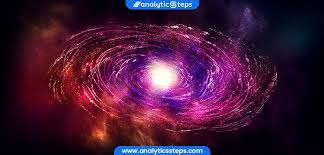
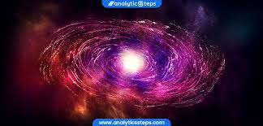

The history of the Big Bang theory began with the Big Bang's development from observations and theoretical considerations. Much of the theoretical work in cosmology now involves extensions and refinements to the basic Big Bang model. The theory itself was originally formalised by Belgian Catholic priest, theoretical physicist, mathematician, astronomer, and professor of physics Georges Lemaître. Hubble's Law of the expansion of the universe provided foundational support for the theory.

 
view page1
view page2
view page4

view page1
view page2
view page4